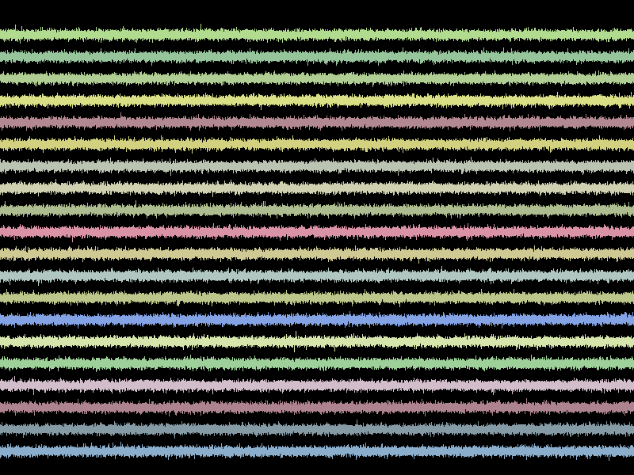

Multiple digital signals.
Note
This example is based on vispy.gloo and thus uses GLSL shading code, which is executed at the GPU and is defined as multiline strings.
from vispy import gloo
from vispy import app
import numpy as np
import math
m = 20
n = 25000
x = np.tile(np.linspace(-1., 1., n), m)
y = .1 * np.random.randn(m, n)
y += np.arange(m).reshape((-1, 1))
data = np.zeros(n*m, dtype=[
('a_position', np.float32, 2),
('a_color', np.float32, 3),
('a_index', np.float32, 1),
])
data['a_position'] = np.zeros((n*m, 2), dtype=np.float32)
data['a_position'][:, 0] = x
data['a_position'][:, 1] = .9*(y.ravel()/y.max()*2-1)
data['a_color'] = np.repeat(np.random.uniform(size=(m, 3), low=.5, high=.9),
n, axis=0)
data['a_index'] = np.repeat(np.arange(m), n)
VERT_SHADER = """
#version 120
attribute vec2 a_position;
attribute float a_index;
varying float v_index;
attribute vec3 a_color;
varying vec3 v_color;
uniform vec2 u_pan;
uniform vec2 u_scale;
void main() {
vec2 position_tr = u_scale * (a_position + u_pan);
gl_Position = vec4(position_tr, 0.0, 1.0);
v_color = a_color;
v_index = a_index;
}
"""
FRAG_SHADER = """
#version 120
varying vec3 v_color;
varying float v_index;
void main() {
gl_FragColor = vec4(v_color, 1.0);
if ((fract(v_index) > .00001) && (fract(v_index) < .99999))
gl_FragColor.a = 0.;
}
"""
class Canvas(app.Canvas):
def __init__(self):
app.Canvas.__init__(self, keys='interactive')
self.program = gloo.Program(VERT_SHADER, FRAG_SHADER)
self.program.bind(gloo.VertexBuffer(data))
self.program['u_pan'] = (0., 0.)
self.program['u_scale'] = (1., 1.)
def on_initialize(self, event):
gloo.set_state(clear_color=(1, 1, 1, 1), blend=True,
blend_func=('src_alpha', 'one_minus_src_alpha'))
def on_resize(self, event):
self.width, self.height = event.size
gloo.set_viewport(0, 0, self.width, self.height)
def on_draw(self, event):
gloo.clear(color=(0.0, 0.0, 0.0, 1.0))
self.program.draw('line_strip')
def _normalize(self, x_y):
x, y = x_y
w, h = float(self.width), float(self.height)
return x/(w/2.)-1., y/(h/2.)-1.
def on_mouse_move(self, event):
if event.is_dragging:
x0, y0 = self._normalize(event.press_event.pos)
x1, y1 = self._normalize(event.last_event.pos)
x, y = self._normalize(event.pos)
dx, dy = x - x1, -(y - y1)
button = event.press_event.button
pan_x, pan_y = self.program['u_pan']
scale_x, scale_y = self.program['u_scale']
if button == 1:
self.program['u_pan'] = (pan_x+dx/scale_x, pan_y+dy/scale_y)
elif button == 2:
scale_x_new, scale_y_new = (scale_x * math.exp(2.5*dx),
scale_y * math.exp(2.5*dy))
self.program['u_scale'] = (scale_x_new, scale_y_new)
self.program['u_pan'] = (pan_x -
x0 * (1./scale_x - 1./scale_x_new),
pan_y +
y0 * (1./scale_y - 1./scale_y_new))
self.update()
def on_mouse_wheel(self, event):
dx = np.sign(event.delta[1])*.05
scale_x, scale_y = self.program['u_scale']
scale_x_new, scale_y_new = (scale_x * math.exp(2.5*dx),
scale_y * math.exp(2.5*dx))
self.program['u_scale'] = (scale_x_new, scale_y_new)
self.update()
if __name__ == '__main__':
c = Canvas()
c.show()
app.run()